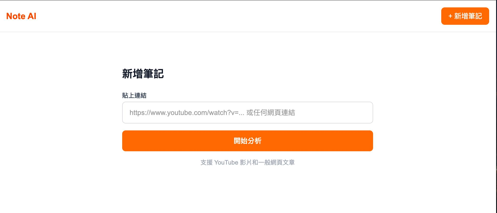
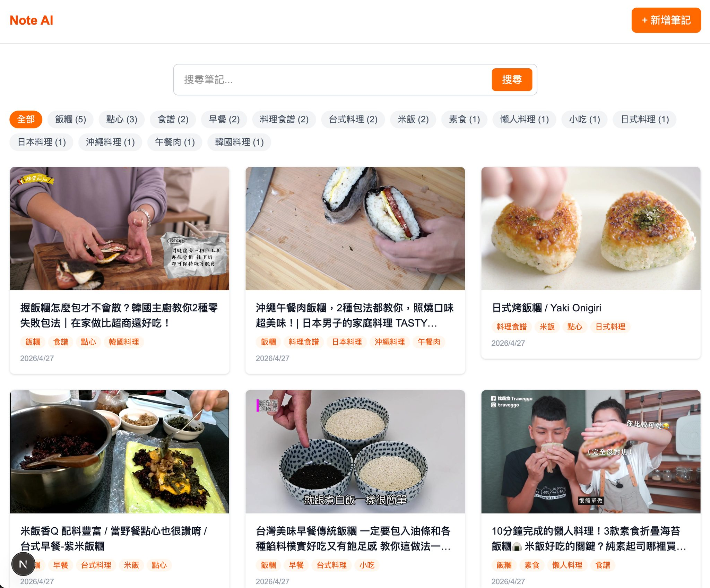
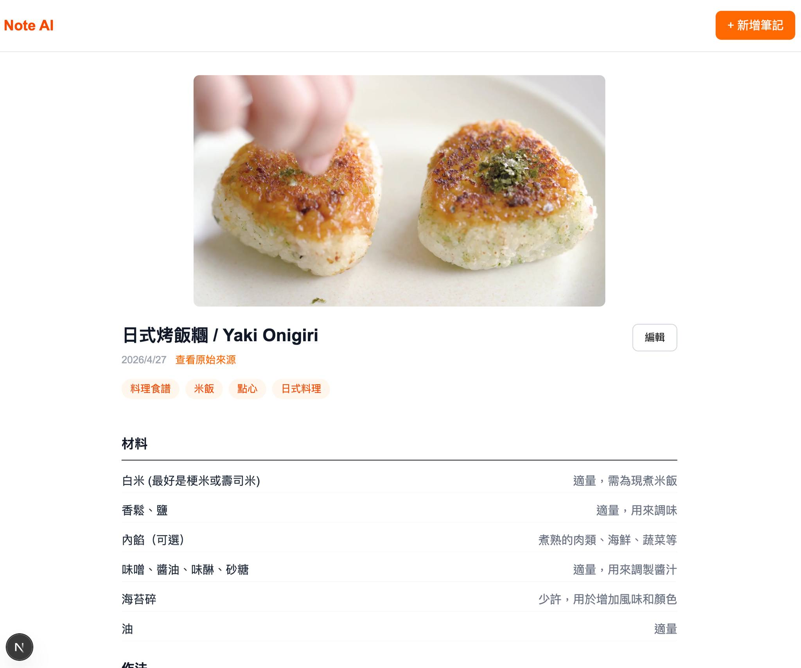
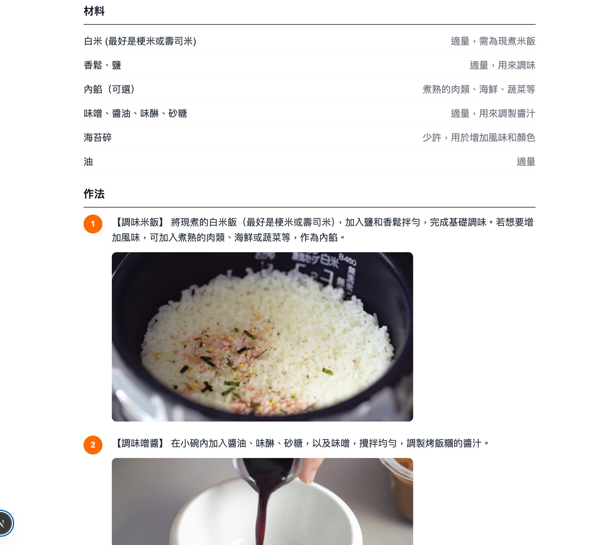
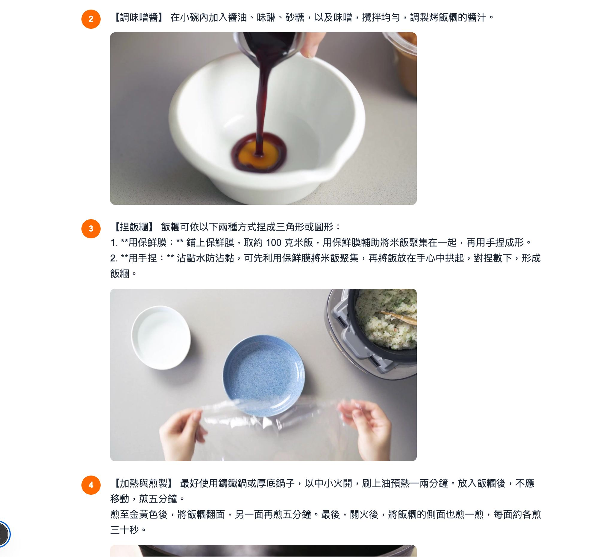

← 返回作品集
Note AI 智慧筆記





「連結變筆記」系統，使用者只需提交 YouTube 影片或網頁 URL，系統即自動擷取內容，透過本地 LLM 進行分析，產出結構化筆記，並自動生成標籤與封面圖片，支援全文搜尋與標籤篩選。
功能特色
- 非同步任務佇列，支援進度追蹤與自動重試
- AI 自動判斷內容類型（食譜 vs. 文章）
- 自動標籤生成
- 全文搜尋
- 重複 URL 偵測